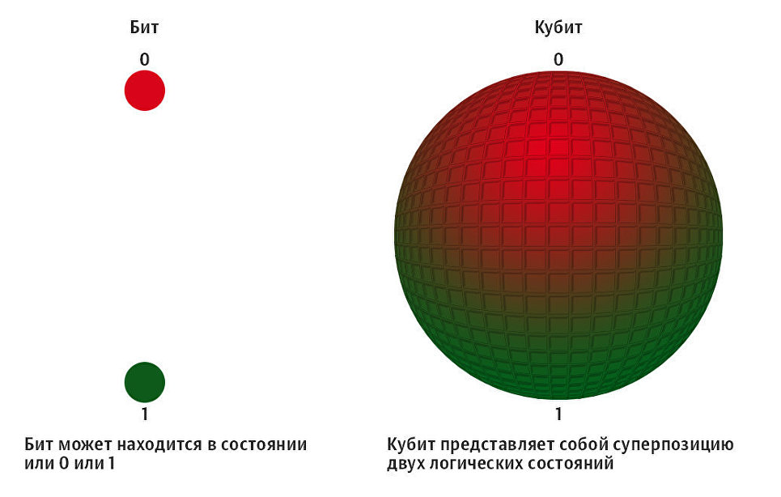
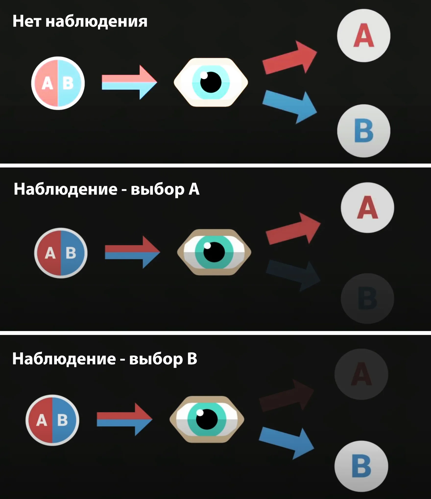

Квантовый компьютер — это принципиально новое вычислительное устройство, работающее на законах квантовой механики.
В отличие от привычных нам классических компьютеров, которые хранят информацию в битах (состояниях 0 или 1), квантовые машины используют кубиты. Кубит благодаря явлению суперпозиции может находиться одновременно и в состоянии нуля, и в состоянии единицы, что дает невероятную вычислительную мощность.
Основная ценность таких систем заключается в их способности решать задачи, которые не под силу даже самым мощным современным суперкомпьютерам. Например, моделирование сложных молекул для создания новых лекарств или оптимизация гигантских логистических сетей.
|
 КубитКуби́т - наименьшая единица информации в квантовом компьютере, использующаяся для квантовых вычислений. Подробно |
 СуперпозицияПринцип суперпозиции — фундаментальный принцип квантовой механики, согласно которому, если для некоторой квантовой системы допустимы состояния 1 и 2, то допустима и любая их линейная комбинация. Подробно |
Однако создание стабильного квантового компьютера — это колоссальная инженерная проблема. Кубиты крайне нестабильны и разрушаются от малейшего внешнего воздействия. Именно поэтому современные квантовые процессоры работают при температурах, близких к абсолютному нулю, в специальных криогенных установках.